The Little Cloud Who Wanted to Rain
A Story About Courage and Kindness
Written by
Hamidreza Rostami
The Little Cloud Who Wanted to Rain
Written by Hamidreza Rostami
Copyright © 2026 Hamidreza Rostami
All rights reserved.
Buyer has usage rights only.
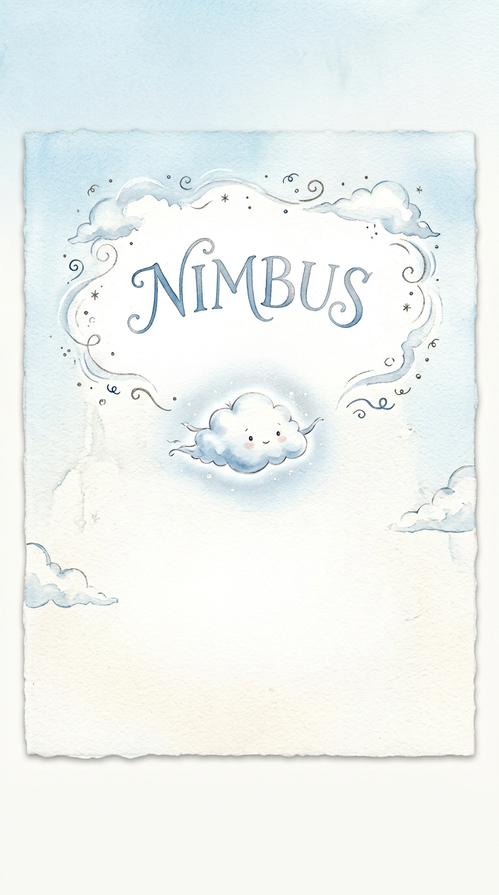
High above the world, where the air was thin and the sun tickled his edges, lived a little cloud named Nimbus.
Nimbus was soft and round, with a silvery glow that shimmered like a pearl. But unlike the other clouds, Nimbus never let go.
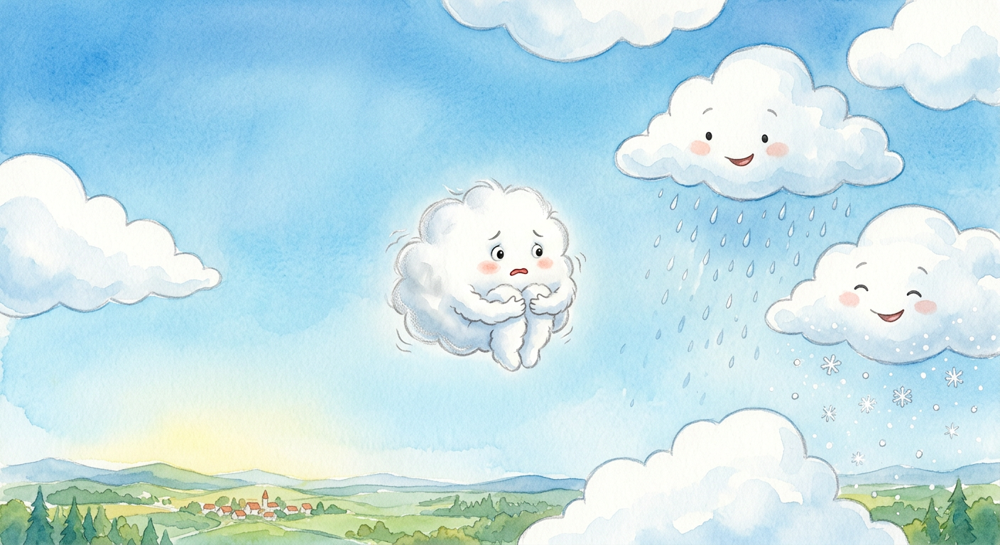
"Don't be silly," said Cumulus, the big fluffy cloud beside him. "Letting go is what we do!"
He puffed up his chest and sent a happy shower down to the fields below. The flowers stretched up to drink, and the children laughed as they splashed in puddles.
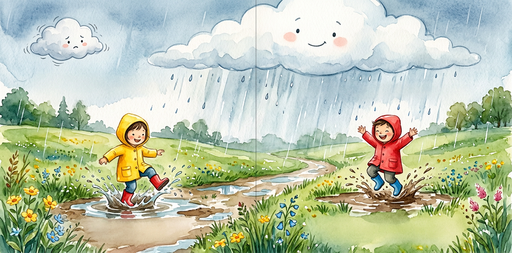
Nimbus squeezed himself smaller. "But what if I disappear? What if I'm not a cloud anymore?"
Stratus, the long gray cloud who stretched across the sky like a blanket, chuckled. "You won't disappear, little one. You'll just become something new."
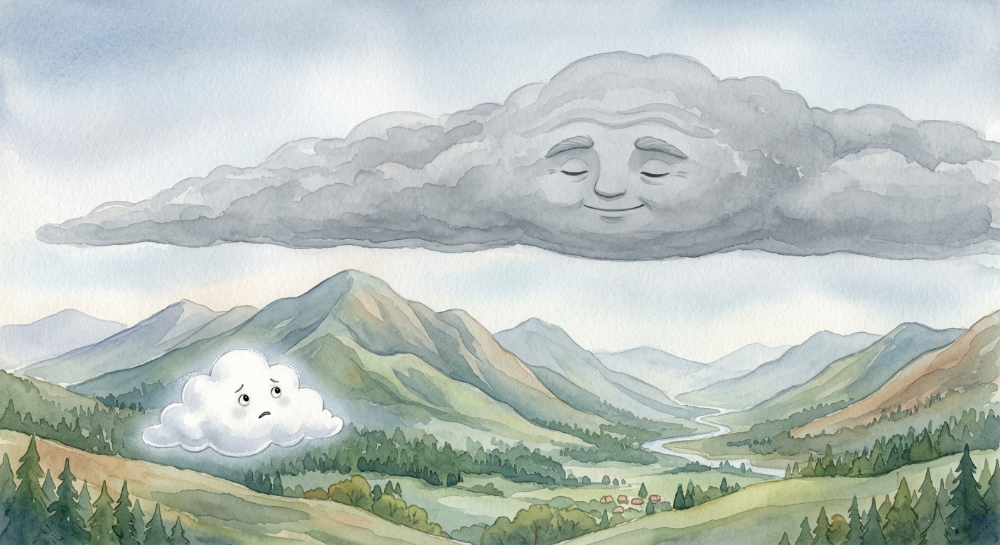
That night, as the stars began to twinkle, Nimbus watched the others change.
Cirrus painted streaks across the sunset. Cumulus became a great white castle. Stratus wrapped the world in a cozy gray hug.
And Nimbus? Nimbus stayed the same. Small. Round. Afraid.
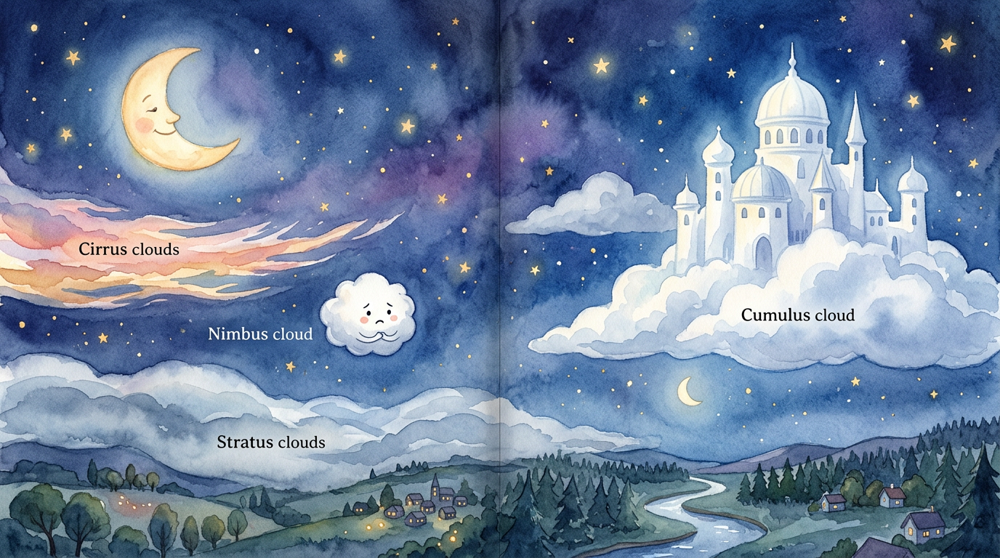
The next morning, Nimbus heard a sound. A tiny, sad sound.
Below, in a little garden, a small sparrow with a broken wing looked up at the empty sky. The flowers drooped. The soil cracked.
"Please," whispered the sparrow. "We need rain."
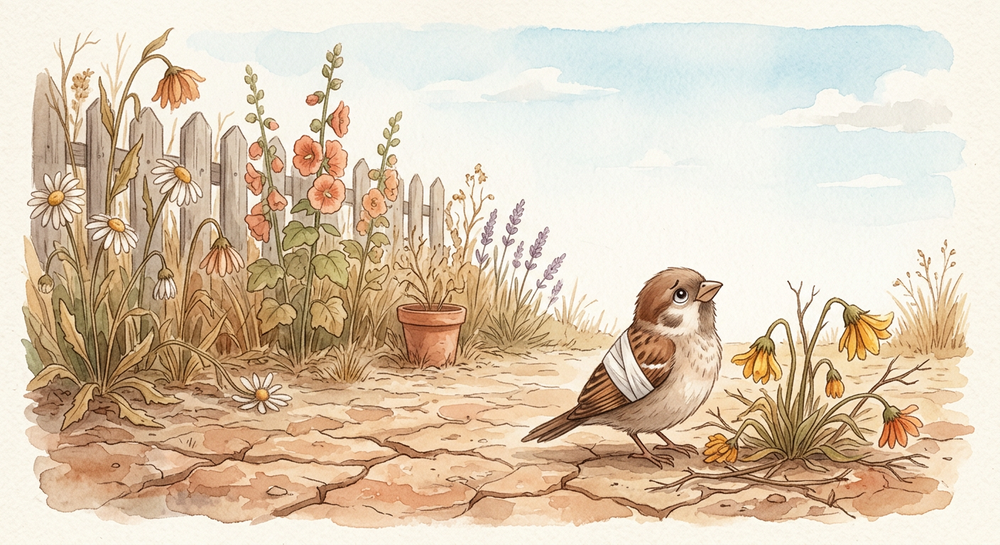
Nimbus's heart ached. He wanted to help. But his edges trembled.
"I... I can't," he whispered to himself. "What if I fall apart?"
The wind sighed. "Sometimes, little cloud, you have to let go to hold on to what matters."
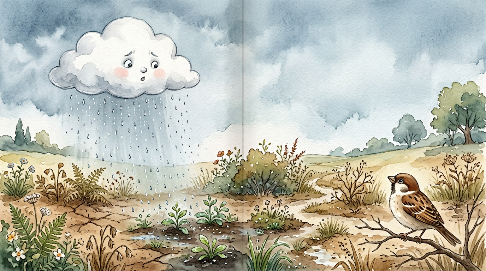
Nimbus took a deep breath. He thought of the sparrow's sad eyes. The thirsty flowers. The cracked earth.
And then... he let go.
One tiny drop. Then another. Then a hundred.
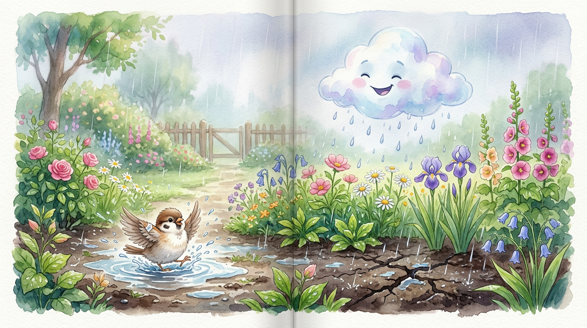
The rain was soft at first. Gentle. Like a secret between friends.
Then it grew. Nimbus poured his heart into every drop. The sparrow chirped happily as water pooled around her. The flowers lifted their heads. The soil drank deeply.
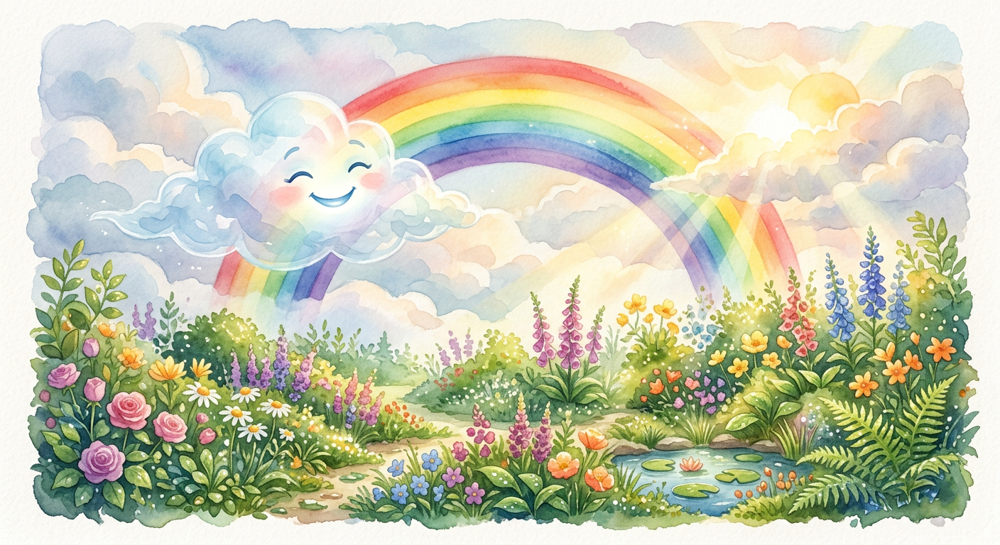
Nimbus felt himself changing. He was getting thinner. Lighter.
"Oh no!" he thought. "I'm disappearing!"
But then he noticed something wonderful. As his drops fell, they didn't just disappear. They became life. They became growth. They became hope.
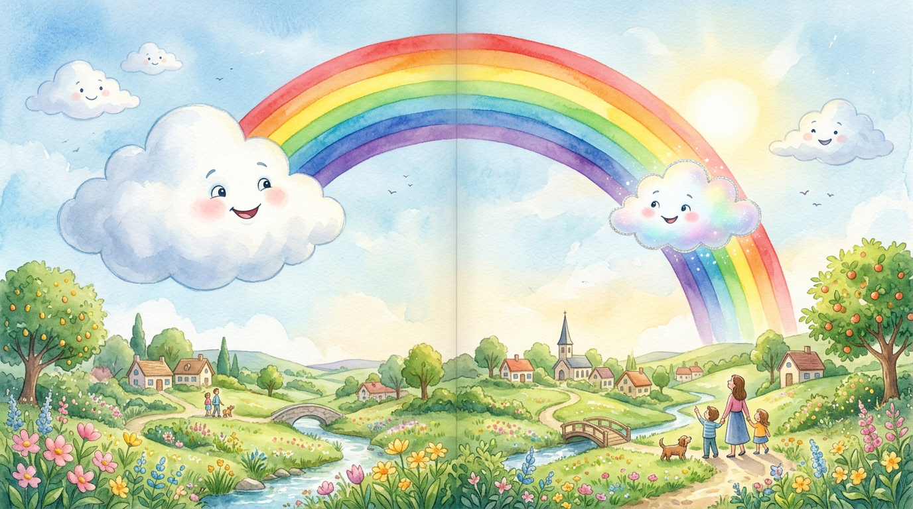
And then, something magical happened.
The sun came out. It shone through Nimbus, turning his remaining edges into a beautiful rainbow.
"Look at you!" said Cumulus, floating nearby. "You're not gone. You're beautiful!"
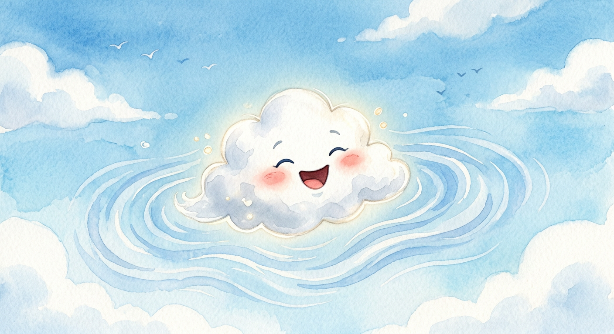
Nimbus laughed. The sound was like a summer shower.
He had been afraid of letting go. But letting go hadn't made him disappear. It had made him part of something bigger.
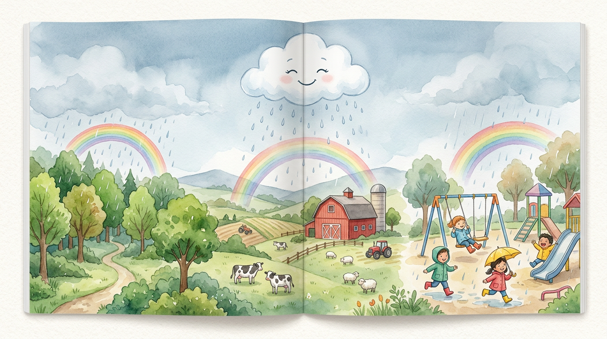
From that day on, whenever the world below needed him, Nimbus didn't hesitate.
He let go with joy, knowing that every drop was a gift. And every time he rained, he left a little rainbow behind.
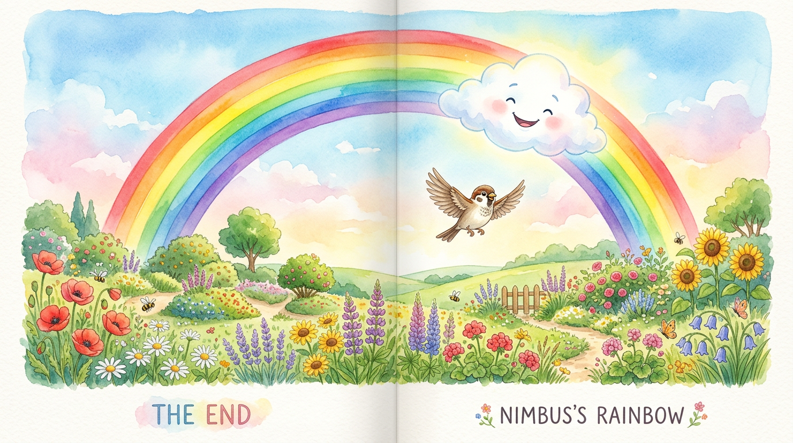
And if you look up at the sky after a rain, and see a rainbow smiling down at you...
maybe that's Nimbus, saying hello.